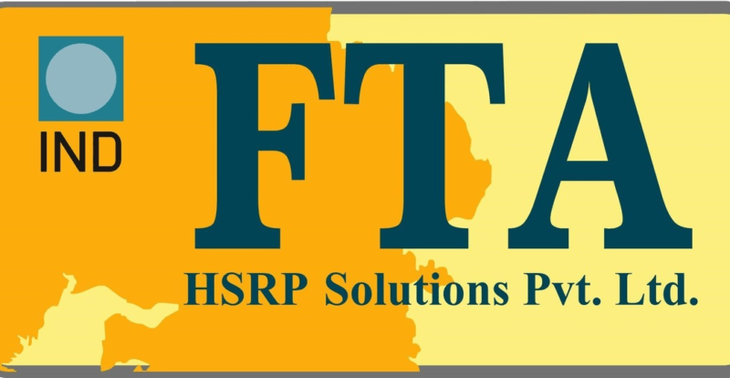

In India, the poor are always an afterthought. It seems strange, given that it is a country where millions of people live in extreme poverty, but that is how things have always been. Matters became even worse since the lockdown has begun. With no money and no documents to help them access relief measures related to food, health, water, sanitation, shelter and livelihood, the homeless in India have become the most vulnerable to the immediate impact and aftermath of the Covid-19 crisis.
However, Dream Girl Foundation has expressed their solidarity with those less fortunate than ourselves and have helped cater to their food and nutrition requirements. Our foundation has managed to convert its non-Formal Education centres into Ration Distribution Centres and have successfully provided families easy access to their ration kits from the ration distribution centres, which include:
|  |
| OR | |
|||||||
Disclaimer – All donations made to the Dream Girl Foundation will be allocated and dispersed as per the need of ongoing and future projects. Said projects are aimed towards the betterment of underprivileged children in India. All donations are exempted under section 80G of Income Tax Act, 1961.
@copyright © 2021 All Right Reserved | Internships in India